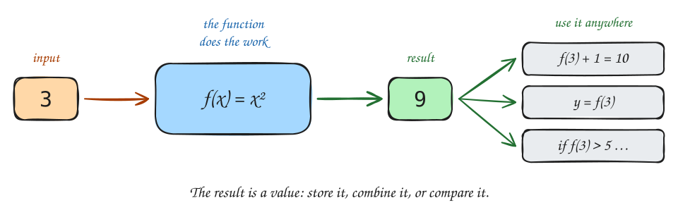

Return Values and Scope
COSC120: Introduction to Computer Science I
Learning Outcomes
By the end of this lecture, you’ll be able to:
- Define methods that compute and return a value using the
returnstatement - Store and use a method’s return value in a variable, expression, or condition
- Write methods with multiple
returnstatements in different branches - Explain what scope means and identify the scope of a local variable
- Trace a method call with a return value and show what the caller receives
The Limitation of void
In the last two lectures, all methods started with void:
void means the method does something — but gives nothing back.
That works when you just want to print or perform an action.
But what if you need to use the result of a computation?
The result disappears the moment it is printed. You cannot store it, use it in a calculation, or pass it to another method.
There is a better way.
Functions in Mathematics
You have been working with functions in math for years:
\[f(x) = x^2 \qquad g(x, y) = x + y \qquad h(x) = 2x + 1\]
Each function:
- Takes input (the values in the parentheses)
- Computes something
- Produces a result — a value you can use anywhere
When you write \(f(3)\), you get back \(9\) — and you can keep using that \(9\):

5 …. Caption: 'The result is a value: store it, combine it, or compare it.'" width="800" class="r-stretch">Java methods work exactly the same way. The only difference is that you also have to tell Java what type of value the method will produce.
Methods as Functions
Translating a math function into Java:
| Math | Java |
|---|---|
| \(f(x) = x^2\) | int square(int x) { return x * x; } |
| \(g(x, y) = x + y\) | int add(int x, int y) { return x + y; } |
| \(h(x) = 2x + 1\) | int linear(int x) { return 2 * x + 1; } |
Two things changed from void methods:
voidis replaced by the return type — the type of value the method produces (int,double,String,boolean, …)returnsends the value back — it plays the role of the=sign in the math function
![Two rows. Top row, labeled math: the symbols f, (x), =, and x², spaced out. Bottom row, labeled Java: the code int square(int x) { return x * x; } in a gray box. A vertical arrow runs from each math symbol down to its Java partner: f (blue) to square, (x) (orange) to (int x), = (green) to return, and x² to x * x. Labels under the code point up at each part: 'return type: what kind of value comes back' (violet) at int, 'name' (blue) at square, 'input (parameter)' (orange) at (int x), '= becomes return' (green) at return, and 'the result' at x * x. Caption: 'Only the return type is new — math never says what kind of number you get.'](diags/10-math-to-java.svg)
The method computes a value and hands it back to whoever called it.
The return Statement
The return statement does two things:
- Sends a value back to whoever called the method
- Stops the method immediately — no further lines in that branch run
The syntax:
The expression can be any value of the right type — a literal, a variable, a calculation:
Warning
The type of the expression after return must match the return type declared before the method name. int square(int x) { return 3.14; } is an error — you declared int but tried to return a double.
Using the Return Value
When a method returns a value, you can use that value in three ways:
1. Store it in a variable:
2. Use it directly in an expression:
You can also pass a return value directly as an argument to another method:
Piecewise Functions and Multiple Returns
In math, a piecewise function produces different results depending on the input:
\[|x| = \begin{cases} x & \text{if } x \geq 0 \\ -x & \text{if } x < 0 \end{cases}\]
In Java, this maps directly to if/else with a return in each branch:
Another example — letter grade from a score:
letterGrade(87): is 87 ≥ 90? No. Is 87 ≥ 80? Yes → return "B". The method stops there — the remaining checks never run.
Warning
Every path through the method must reach a return. If Java can find a path that doesn’t, it will refuse to compile: “missing return statement.”
Tracing a Return Value
Tracing int x = square(4); — click through the steps:
![Two code boxes. Left, main(): void main() { int x = square(4); IO.println(x); }. Right, square(): int square(int n) { return n * n; }. An orange arrow from the call square(4) to square is labeled '1. call: 4 is copied into n'. Below square: '2.' and a box labeled n holding 4, then '3. 4 * 4 = 16'. A thick green arrow from square back to the call in main is labeled 'sends 16 back'. Below main: '4. the call is replaced by its value:' followed by int x = square(4); with a green arrow to int x = 16;, then a green box labeled x holding 16, and '5. IO.println(x) prints 16'.](diags/10-return-trace.svg)
Think of the call square(4) being replaced by its result — as if Java rewrote the line:
What Is Scope?
Scope is the region of code where a variable exists and can be used.
Every variable declared inside a method only exists inside that method:
int addOne(int n) {
int result = n + 1; // 'result' is born here
return result; // the VALUE of result escapes — the variable does not
} // 'result' ceases to exist here
void main() {
int x = addOne(5);
IO.println(result); // ✗ won't compile: 'result' does not exist here
IO.println(x); // ✓ x holds 6 (the value that escaped)
}The return value is the one thing that escapes the method’s scope. Everything else stays inside.
![Two bubbles. Left, gray bubble labeled addOne(5), containing a box labeled n holding 5 and a box labeled result holding 6, with the note 'lives here only'. Right, white bubble labeled main(), containing a green box labeled x holding 6, and in red: '✗ result does not exist here'. A thick green curved arrow runs from result in the left bubble to x in the right bubble, labeled 'return value: 6' and 'the one thing that escapes'. Under the left bubble, in red: 'When addOne ends, its bubble pops: n and result are gone.' Under the right bubble, in green: 'Only the returned value survives — stored in x.'](diags/10-scope-bubbles.svg)
Local Variables
A local variable is a variable declared inside a method. Parameters are local variables too.
All local variables:
- Are created when the method is called
- Only exist inside that method
- Cease to exist when the method ends
These two result variables are completely separate. They happen to share a name, but they live in different bubbles. Changing one has zero effect on the other.
Note
This independence is a feature, not a bug. Methods are self-contained units. You can write and test them without worrying about variable names clashing with other methods.
void vs. Return: Which to Use?
Two kinds of methods. Two different jobs:
void |
With return type | |
|---|---|---|
| Does what? | Performs an action | Computes a value |
| Gives back | Nothing | A value the caller can use |
| Math analogy | Procedure | Function |
| Example | printBanner() |
square(int x) |
Use void when the method’s job is to do something:
- Print output
- Draw something
- Save something
Use a return type when the method’s job is to compute and hand back a value:
- Calculate a result
- Check a condition and answer yes/no
- Transform a value (uppercase, round, format)
Tip
Ask yourself: “Does the caller need to use this result somewhere?” If yes → return type. If the method just acts and the caller moves on → void.
Code Example — Grade Calculator
Problem: Print a grade report for three students.
Read main first, like a table of contents:
The two methods that compute and return a value:
The two void methods that print:
void printSeparator() {
IO.println("-----------------------------");
}
void printStudent(String name, int score) {
String grade = letterGrade(score);
boolean passing = isPassing(score);
IO.println("Student: " + name);
IO.println("Score: " + score);
IO.println("Grade: " + grade);
if (passing) {
IO.println("Status: Passing");
} else {
IO.println("Status: Not passing");
}
}printStudent stores the return values of letterGrade and isPassing, then prints them. Before the next slide, predict the output.
Output:
-----------------------------
Student: Alice
Score: 87
Grade: B
Status: Passing
-----------------------------
Student: Bob
Score: 54
Grade: F
Status: Not passing
-----------------------------
Student: Charlie
Score: 92
Grade: A
Status: Passing
-----------------------------What would you change to make 65 the passing score?
Common Mistakes
1. Forgetting to return in a non-void method
Won’t compile: “missing return statement.” The method computes result but never hands it back. Fix: add return result;.
2. A path through the method that never reaches return
Won’t compile: what if x < 0? That path reaches the end with no return.
Fix: add else { return -x; } or return -x; after the if block.
3. Ignoring the return value
square(5);— compiles, but computes 25 and immediately discards itint x = square(5);— ✓ stores the result so you can use it
4. Using a local variable outside its method
IO.println(result); won’t compile: result lived inside addOne and is gone. Store the return value in a variable in main instead: int result = addOne(5);.
Key Takeaways
- A method’s return type (in place of
void) says what kind of value it gives back:int square(int x). returnsends a value back to the caller and stops the method immediately.- The returned value replaces the call: you can store it, use it in an expression, or test it in a condition.
- Calling a returning method and ignoring the result is legal but almost always a bug.
- Every path through a non-void method must reach a
return, or it won’t compile. - Scope is where a variable exists. Local variables (including parameters) exist only inside their method.
- Use
voidwhen a method does something; use a return type when it computes a value.
Worksheet
Problem 1 — Predict the output. Work through it on paper, then run it to check.
Problem 2 — Predict the output. Trace each call to classify, then run it to check.
Problem 3 — Write it. Write a method max(int a, int b) that returns the larger of two integers. If they are equal, return either one.
Test it from main with at least four pairs, printing each result.
Problem 4 — Write it. Write each of the following methods, then call them from main:
double celsiusToFahrenheit(double c)— returns \(F = \frac{9}{5}C + 32\) (careful:9 / 5is integer division — use9.0 / 5)boolean isFreezing(double fahrenheit)— returnstrueif the temperature is at or below 32°Fmainreads a Celsius temperature, converts it, and prints the result and whether it is freezing. Read the input with:double c = Double.parseDouble(IO.readln("Temperature in Celsius: "));
Example runs:
Temperature in Celsius: 0
32.0°F
Freezing!Temperature in Celsius: 20
68.0°F
Not freezing.Problem 5 — Debug it. Find and fix every mistake, then run it.
(Expected output after fixing: The cube of 3 is: 27)
Problem 6 — Write it (synthesis). Write a complete program with at least one void method, one void method with parameters, and one method with a return value.
- Ask the user for two integers.
- Print their sum, their product, their average (as a
double), and which one is larger (orequalif they match). - Each computation should be done in its own method.